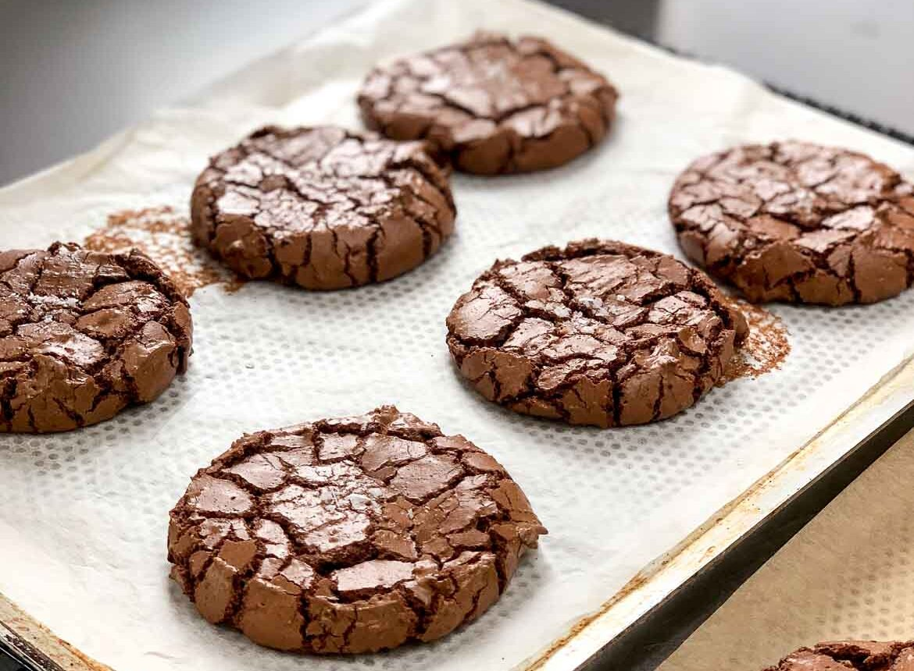
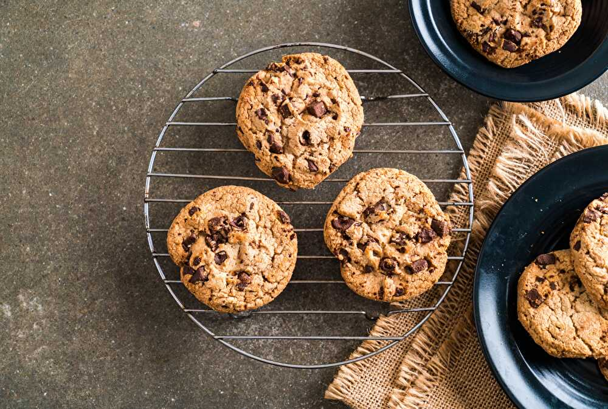
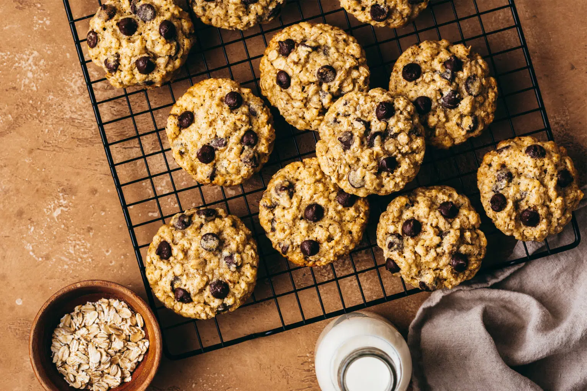
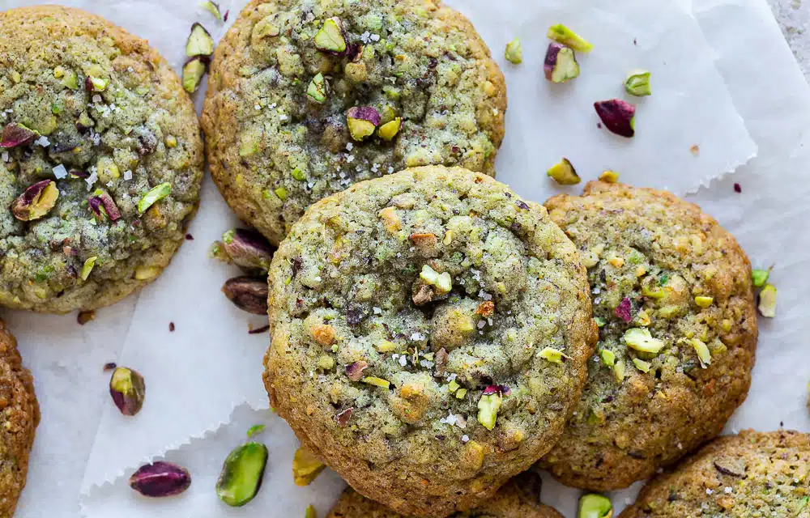
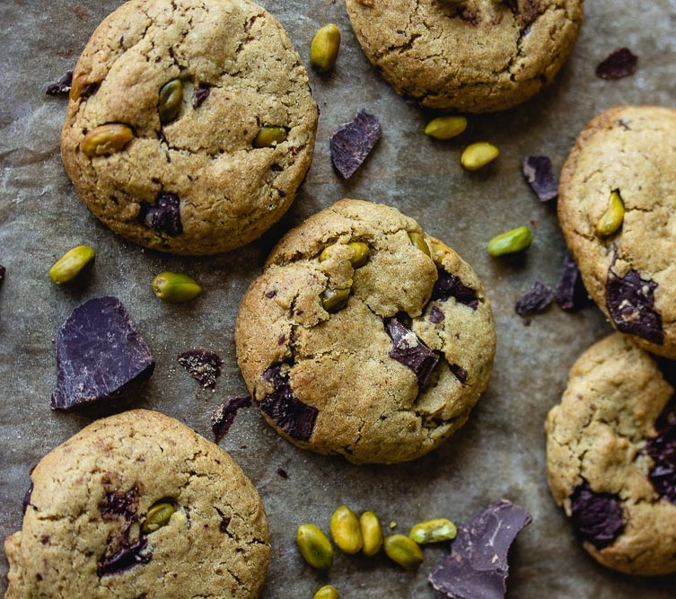

Nos recettes
Recettes Cookies Choco
Choco Cookies

Ingrédients
- 200 g de chocolat noir
- 175 g de farine
- 80 g de cassonade
- 80 g de beurre
- 1 œuf
- 1 c. à café de levure chimique
- 2 c. à soupe de poudre d'amandes
- 1 pincée de sel
Préparation : Préchauffez le four à 180°C et préparez une plaque avec du papier cuisson. Faites fondre la moitié du chocolat avec le beurre, ajoutez la cassonade et l'œuf. Incorporez la poudre d'amandes, la farine, la levure et le sel. Ajoutez des pépites de chocolat. Formez des boules de pâte, espacez-les sur la plaque et parsemez des pépites restantes. Enfournez environ 10 minutes. Laissez refroidir avant de déguster.
Last updated 3 mins ago
Choco Brownie Cookies
Ingrédients
- 200 g de chocolat noir
- 150 g de beurre
- 150 g de sucre roux
- 2 œufs
- 1 c. à café d'extrait de vanille
- 200 g de farine
- 1 c. à café de levure chimique
- 1 pincée de sel
- 100 g de pépites de chocolat
Préparation : Préchauffez le four à 180°C et préparez une plaque avec du papier cuisson. Faites fondre le chocolat noir avec le beurre. Mélangez le sucre et les œufs, puis ajoutez l'extrait de vanille. Incorporez le mélange chocolat-beurre fondu au mélange sucre-œufs. Ajoutez la farine, la levure et le sel, mélangez bien. Ajoutez les pépites de chocolat. Formez des boules de pâte, disposez-les sur la plaque et aplatissez-les légèrement. Enfournez pendant environ 10 à 12 minutes. Laissez refroidir avant de déguster.
Last updated 2 days ago
Recettes Cookies Vanille et Avoine
Cookies Vanille et Choco Chips
Ingrédients
- 150 g de pépites de chocolat
- 125 g de sucre roux
- 125 g de sucre
- 200 g de beurre
- 1 œuf
- 1 c. à soupe de sucre vanillé ou extrait de vanille
- 1 c. à café de bicarbonate de soude
- 1 pincée de sel
- 300 g de farine
Préparation : Mélangez les sucres, le beurre ramolli, la vanille, le sel et le bicarbonate. Ajoutez l'œuf et mélangez. Incorporez progressivement la farine. Ajoutez les pépites de chocolat. Formez des boules de pâte, disposez-les sur une plaque. Cuisez à 180°C pendant 8-10 minutes. Laissez refroidir.
Last updated 4 days ago
Cookies Avoine
Ingrédients
- 150 g de beurre mou
- 100 g de sucre blanc
- 100 g de sucre brun (sucre cassonade)
- 1 œuf
- 1 cuillère à café d'extrait de vanille
- 125 g de farine
- 1/2 cuillère à café de levure chimique
- 1/2 cuillère à café de bicarbonate de soude
- 150 g de flocons d'avoine
- 150 g de pépites de chocolat (ou chocolat coupé en morceaux)
Préparation : Préparez la pâte en mélangeant beurre, sucres, œuf et vanille. Incorporez le mélange de farine, levure, bicarbonate et sel jusqu'à obtenir une pâte homogène. Ajoutez les flocons d'avoine et les pépites de chocolat à la pâte. Façonnez des cookies et disposez-les sur une plaque à pâtisserie. Cuisez au four préchauffé à 180°C pendant 10-12 minutes jusqu'à ce que les bords soient dorés. Refroidissez sur une grille avant de déguster. Ces cookies seront à la fois moelleux et croustillants, parfaits pour une pause gourmande !
Last updated 6 days ago
Recettes Cookies Pistache
Cookies Pistache
Ingrédients
- 115 g de beurre non salé, ramolli
- 100 g de sucre blanc
- 100 g de sucre brun (cassonade)
- 1 œuf
- 1 cuillère à café d'extrait de vanille
- 190 g de farine tout usage
- 1/2 cuillère à café de bicarbonate de soude
- 1 pincée de sel
- 100 g de pistaches non salées, hachées grossièrement
- 100 g de pépites de chocolat blanc (facultatif)
Préparation : Battre le beurre avec les sucres jusqu'à obtention d'une texture crémeuse. Ajouter l'œuf et la vanille. Mélanger la farine, le bicarbonate de soude et le sel, puis intégrer progressivement au mélange précédent. Incorporer les pistaches hachées et les pépites de chocolat blanc. Former des boules de pâte, les aplatir légèrement et cuire au four à 180°C pendant 10-12 minutes. Laisser refroidir sur une grille avant de servir.
Last updated 8 days ago
Cookies Pistache ++
Ingrédients
- 140 g de pistaches (80 g réduits en poudre + 60 g concassées)
- 125 g de beurre ramolli
- 130 g de sucre
- 1 sachet de sucre vanillé
- 1 œuf à température ambiante
- 120 g de farine
- 1 cuillère à café de fécule de maïs
- 1/2 cuillère à café de bicarbonate de soude
- 50 g de pépites de chocolat
Préparation : Commencez par mixer 80 g de pistaches jusqu'à obtenir une poudre fine et concassez grossièrement les 60 g restants. Dans un bol, battez le beurre ramolli avec le sucre et le sucre vanillé jusqu'à obtenir une texture crémeuse. Ajoutez l'œuf et mélangez bien. Incorporer ensuite la farine, la poudre de pistache, la fécule de maïs et le bicarbonate de soude, en mélangeant juste assez pour obtenir une pâte homogène. Ajoutez les pistaches concassées et les pépites de chocolat, mélangez brièvement. Couvrez le bol de pâte et laissez reposer au réfrigérateur pendant au moins 1 heure. Préchauffez votre four à 175°C et préparez une plaque de cuisson avec du papier sulfurisé. Formez des boules de pâte à l'aide d'une cuillère à soupe, disposez-les sur la plaque en les espaçant, puis aplatissez-les légèrement. Faites cuire au four pendant 10 à 12 minutes jusqu'à ce que les cookies soient légèrement dorés sur les bords. Laissez-les refroidir sur la plaque avant de les transférer sur une grille pour un refroidissement complet. Vous pouvez également saupoudrer les cookies refroidis avec un peu de fleur de sel pour une touche finale savoureuse.
Last updated 10 days ago